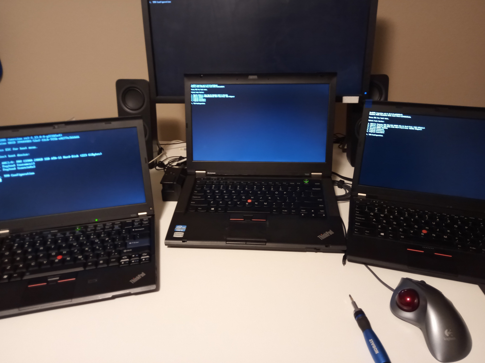

Traditional computer BIOS programs are either spyware, featurless, or horrifically out of date. A few problems are evident with these systems:
In order to solve these problems, you need a different BIOS. The manufactureres like to prevent modifications, but since most chips can just be read/flashed externally, that's not a huge problem if you're willing to do a lot of work for your freedom and security.
Coreboot is one of my favorite open soucre projects. It's a free replacement to commercial BIOS/UEFI systems. I've got it on my X220, X230 (courtesy of the Skulls project), and now the T430! In order to flash the T430, it needs to be totally taken apart. Since I just got a brand-new T430 and was going to repaste it and clean it anyway, I decided to flash Coreboot on it as well. In for a penny...
Anyway, now I have a coreboot family. Yay!
Special thanks to this blog bpost and of course all the guides out there for the T420 and X230. Splitting the flash into 2 separate chips was the trickiest part, along with figuring out which way to align the clip. Your mileage may vary with all that. My chips were different from his.
